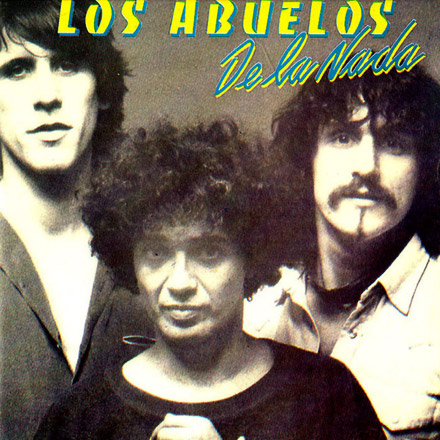
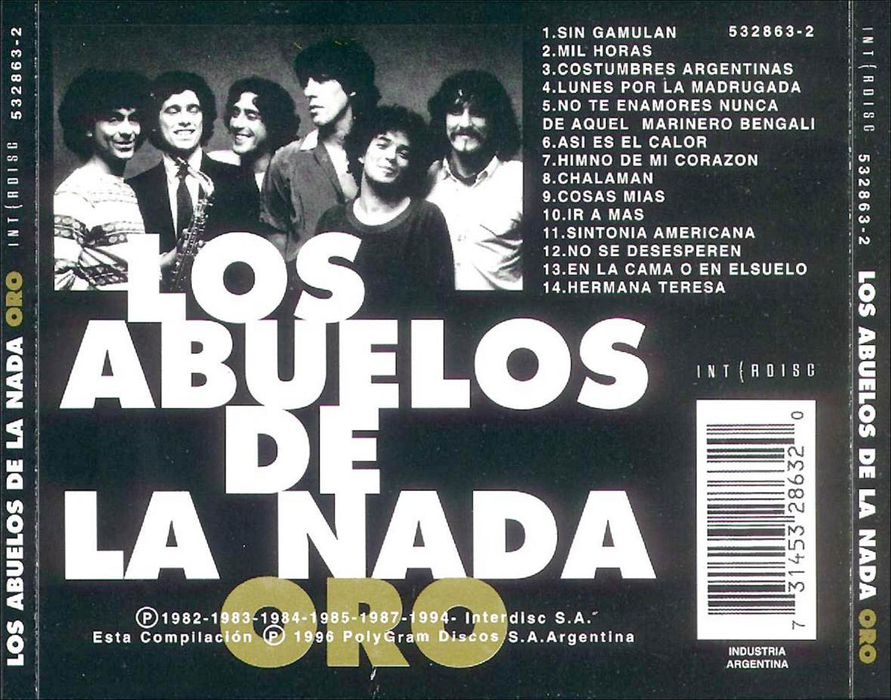
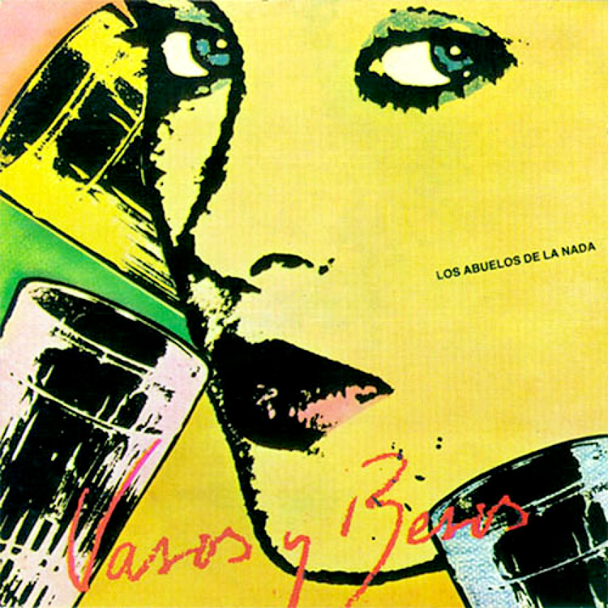
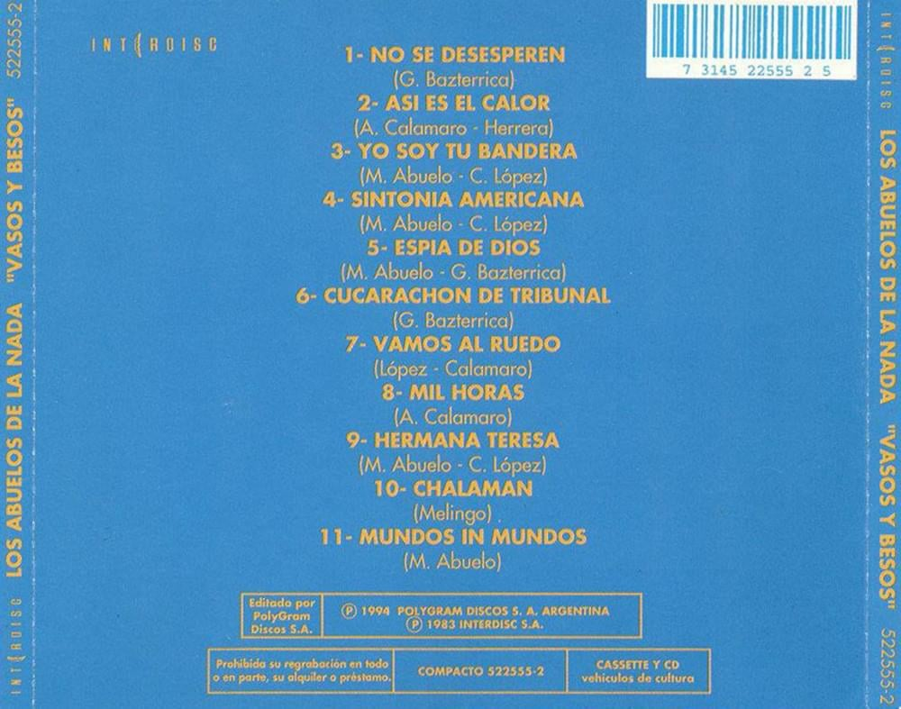
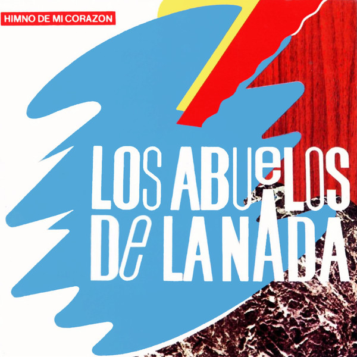
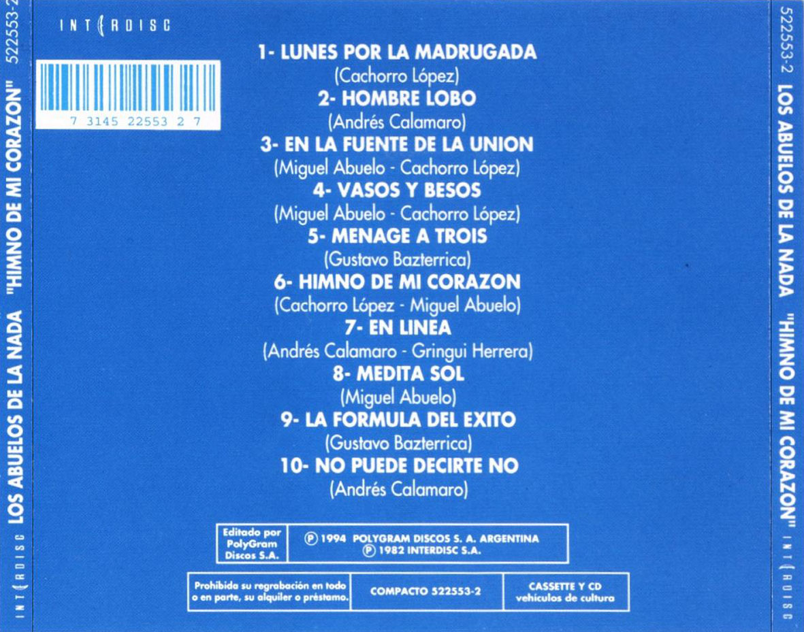
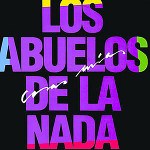
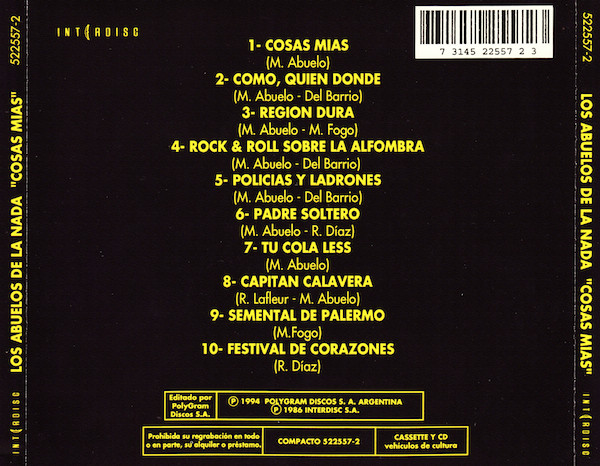

Abuelos de la nada
Los Abuelos de la Nada es una banda argentina de rock y pop. Fue formada en Buenos Aires en 1967 por Miguel Abuelo, Pappo, Eduardo “Mayoneso” Fanacoa, Claudio Gabis, Miguel “Miky” Lara, Alberto “Abuelo” Lara y Héctor Pomo Lorenzo, siendo la misma una de los pioneras del beat y el rock psicodélico en Argentina. Pasado los anos algunos integrantes iban dejando la banda y otros se sumaban como fue el caso de andres calamaro.
Discografia


- No te enamores nunca de aquel marinero begali
- Sin gamulan
- En la cama o en el suelo
- Como debo andar
- Ir a mas
- Tristeza de ciudad
- Creo que es un sueño mas
- Levantando la temperatura
- Guindilla ardiente
- Te vas rica
- Se me olvido que te olvide


- No se desesperen
- Asi es el calor
- Yo soy tu bandera
- Sintonia americana
- Espia de dios
- Cucarachon de tribunal
- Vamos al ruedo
- Mil horas
- Hermana teresa
- Chalaman
- Mundos in mundos


- Lunes por la madrugada
- Hombre lobo
- En la fuente de la union
- Vasos y besos
- Menage a trois
- Himno de mi corazon
- En linea
- Medita sol
- La formula del exito
- No puedo decirte no


- Cosas mias
- Como, quien, donde
- Region dura
- Rock & roll sobre la alfombra
- Policias y ladrones
- Padre soltero
- Tu cola less
- Capitan calavera
- Semental de palermo
- Festival de corazones